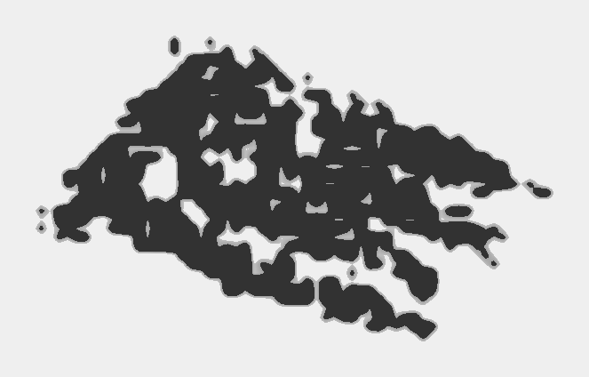
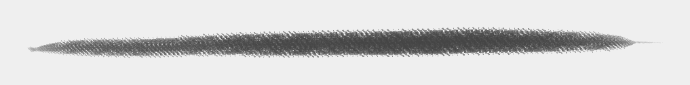
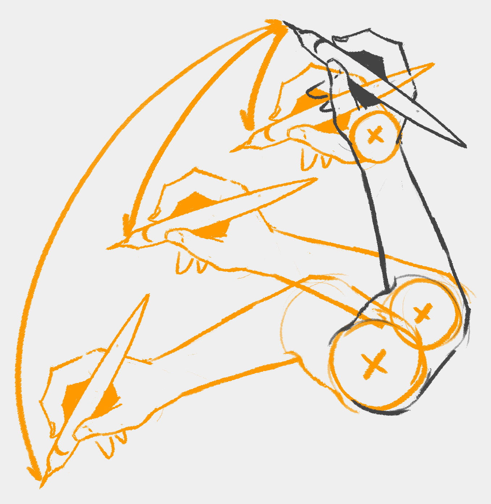
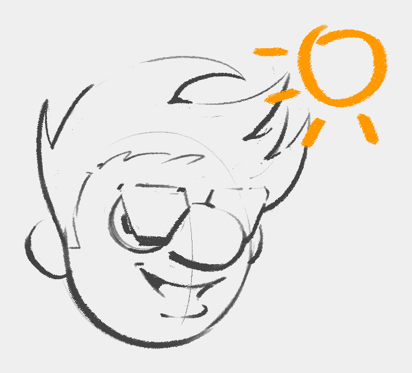
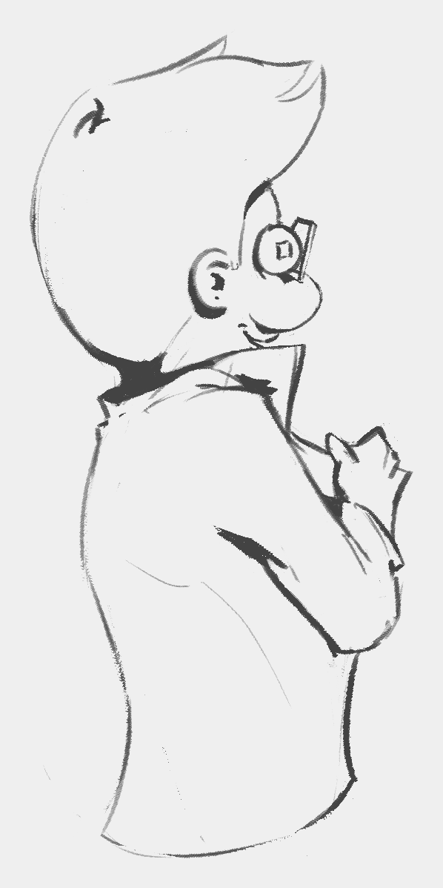
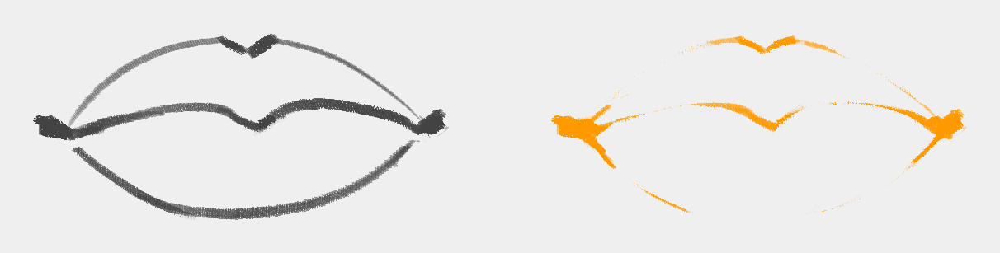
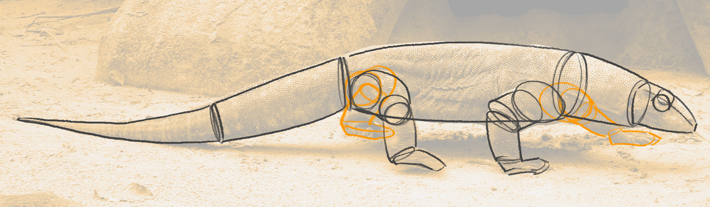
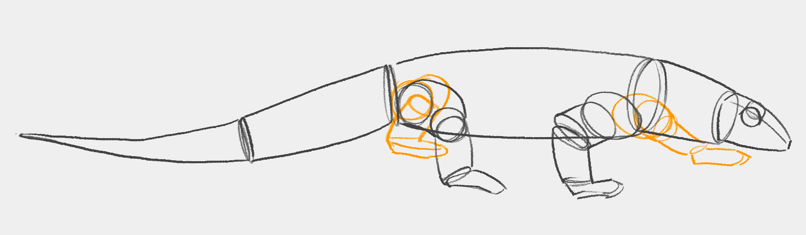
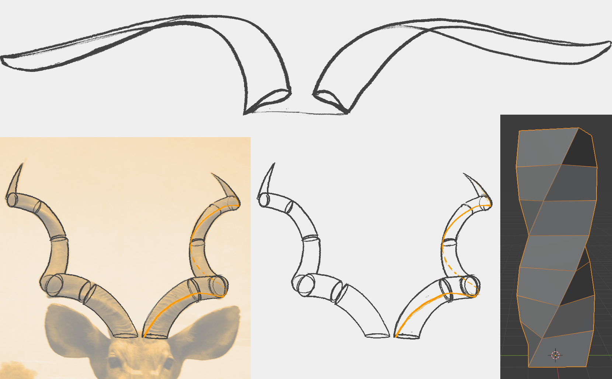
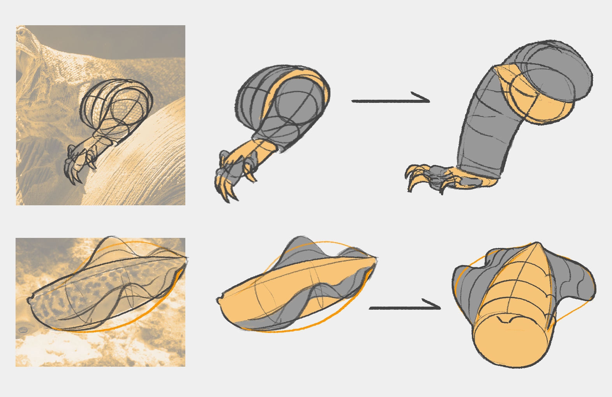

Copyright ©2021 Răzvan Cosmin Rădulescu AKA razcore-rad
TODO:
- acknowledge creators of free online courses
Acknowledgments
| Sebastian Tiplea |
|
| Brainwash |
Copyright ©2021 Răzvan Cosmin Rădulescu AKA razcore-rad
Disclaimer
I’m a self-taught digital art student. I wouldn’t call myself an artist.
My academic background is in physics and IT. I’m currently working as a freelance programmer and do digital art on the side as a hobby.
I’ve been doing digital art on-and-off for about five years at the point of this writing. But I haven’t been consistent with it and haven’t gone beyond an average level of appeal with my designs and paintings.
I created this document to improve my digital art skills faster by following a structured approach and teaching some of the techniques used in draftsmanship and painting along the way.
Within it, you find general drawing and painting techniques taught in many other places and, hopefully, a showcase on applying them to drive self-improvement.
We’re in the context of a Romanian Discord server - Brainwash, making up a small community of 2D and 3D designers. We came up with this structured learning approach within this server by taking inspiration from other free online learning resources.
The approach discussed here works best within a community because it relies on active feedback and constructive criticism.
| Răzvan Cosmin Rădulescu AKA razcore-rad |
|
Copyright ©2021 Răzvan Cosmin Rădulescu AKA razcore-rad
About
What is "Artistic Design Mastery from a Hobbyist"? Referred to as ADeM from now on.
It’s a "live" document that serves two purposes:
- First, it compiles a list of useful short snippets for explaining particular drawing and painting techniques.
- Second, it’s an evolving showcase of how to achieve design mastery through building a sizable visual library covering many topics that fall broadly under these categories: organic, hard-surface, and figure.
The organic category includes anything that generally has rounder or bendy forms. This includes insects, arachnids, fish, small birds and animals, plants, natural rock formations, and other man-made objects such as accessories, flour sacks, backpacks, etc.
Hard-surface includes mainly man-made structures and objects such as everyday items including cars, boats, airplanes, tanks, furniture. Futuristic devices, MECHs, and more also fall under this category.
Lastly, the figure category refers mainly to the human figure, but we include large animals with more complex anatomy.
We use a two-week cycle that keeps things exciting and diverse while covering a broad range of topics as we develop our drawing and painting techniques.
We divide the first week into three phases:
- First, we understand the subject matter from the given reference images using the draw-through method to decipher how the volumes relate to each other in 3D space.
- In the second part, we master the subject by doing refined drawings using more precise 3D forms. After learning the forms, we texture them following the reference images. We end this part with complete textured illustrations.
- We solidify our visual library by combining the given references to design an imagined object or creature. Students can challenge themselves by creating extra designs with elements not covered by the provided reference images.
In the second week, we build on top of the previous one by painting our designs. Therefore, we divide this week into two phases:
- We start with material studies using the same references from the first week. It helps us understand how light interacts with the subject matter that we designed in the previous week.
- In the second phase, we paint the designs under different light conditions to solidify how everything is tied in together.
While attending the program, students are encouraged to give the other participants constructive feedback as much as possible.
Software
We use PureRef, a free image reference software, for distributing reference image sets from online resources.
Verify their LICENSE agreements if you want to use them for your professional work.
Other than PureRef, there’s no requirement for the software you want to sketch with. Or, if you prefer, you can do the exercises traditionally.
To download the PureRef file, click on the image preview for that week:
Blender is a free 3D software that can help us understand how forms turn in space and perspective while being affected by different lenses covering orthographic, one, two, three-point-perspective, and even fisheye.
I suggest using it from time to time by building rough 3D models of your complex designs to build an intuition for how everything fits together.
This isn’t mandatory, but I think it dramatically improves our learning process.
For completeness sake, I’ll mention that I’m using Krita, a free painting software. I made my own brushes, which are part of my larger package set available for free.
I prefer a traditional look even though I work digitally.
Copyright ©2021 Răzvan Cosmin Rădulescu AKA razcore-rad
"Design tidbits" are collections of techniques and explanations illustrated in bite-sized snippets.
We start with the obvious and gradually move into the not-so-obvious.
I’m speaking in the context of digital art, but most of these concepts apply to any medium.
I break these into three sections:
- Line. The focus here is line-art, no color - the simplest way to put ideas on canvas.
- Perspective. Tips on perspective and lenses.
- Color. Take the line-art to the next level with color. Or completely upgrade to painting.
- Extra. Explorative ideas on coming up with designs in the first place.
Pick and choose which techniques you want to use during your practice, and do it deliberately!
Copyright ©2021 Răzvan Cosmin Rădulescu AKA razcore-rad
Design Tidbits > Line
Here, we have a collection of techniques and explanations using the simplest method of transferring ideas from our brain onto the canvas.
Copyright ©2021 Răzvan Cosmin Rădulescu AKA razcore-rad
Design Tidbitsi > Line > Confident
Use a hard brush with little to no opacity. For example, I’m using a brush with this form:
I use 100% opacity and an exponential curve for the flow setting. So it has a very faint degree of transparency but quickly becomes opaque with very little pressure on the stylus.

At first, you’ll be tempted to erase and skip the draw-through method. However, it’s in your interest to incorporate this method into your practice.
Avoid scratchy lines and drawing many times over the same place. Force yourself to avoid erasing as much as possible!
Technique
When it comes to precision, it’s essential to know when to use your wrist, elbow, and shoulder to generate the most efficient stroke.
We develop a feeling for as long as we’re conscious of our strokes when practicing and correcting if needed.
It’s not a matter of one being better than the other.
For example, it makes no sense to use your shoulder to draw a tiny circle. That’s when you use the wrist.
Pick and choose the best tool for the job you need to do.
Copyright ©2021 Răzvan Cosmin Rădulescu AKA razcore-rad
Design Tidbits > Line > Clean
Confidence and getting a clean look are sides of the same coin. They both contribute to an appealing design that looks skillfully executed.
Get clean drawings by first aligning your canvas with your natural hand position.
Lines
For lines, follow these steps with your canvas zoomed out to have a shorter distance to traverse.
Don’t go too much beyond the reference points!
These can also be imaginary points that naturally appear in your drawing as you advance the design.
It makes sense to plot the reference points only if you’re unsure if the drawing is enough.
Curves
For curves, we use the same approach as we did for the line.
Don’t stress about making the motion in one continuous shot! Instead, we can combine multiple strokes as long as we build that confidence! See the previous section.
We don’t necessarily try touching every single guiding point other than the ends.
Ellipses
For ellipses and circles, find guides in your drawing or add them yourself to align them properly in space.
Don’t draw more than one or two revolutions!

These guides converge to vanishing points on the horizon line.
When doing freehand drawings, it’s challenging to get the tilt of the circle right. Unfortunately, there isn’t a simple method that we can use to “get things right”.
We need to practice wisely.
To that end, in the following image, I set Blender with a 20-degree field of view to accentuate how our intuition might be wrong about the circle’s center in perspective.

It’s notoriously difficult for beginners to get the shape of the ellipse correct. However, we can use 3D software to gain an intuition about all of this and more.
I encourage you to use 3D software when you don’t know how things align in 3D space.
The ellipse is cut perfectly in half by the green (Y) perpendicular perspective line. This is because it acts as the minor ellipse axis.
When you first start, it’s difficult, so don’t be hard on yourself. It takes lots of patience and practice!
Overshoot
How to get clean lines?
An easy method is to overshoot past your lines, but on separate layers, and once done cleaning up, we can safely merge the layers.

Rinse and repeat as many times as necessary. Using shortcuts can be a swift process, and with enough practice, it can become your second nature.
Copyright ©2021 Răzvan Cosmin Rădulescu AKA razcore-rad
Design Tidbits > Line > Weight
To get a professional look, we emphasize some lines but not others.

Where and why?
How do we know which lines to thicken?
Let’s turn to real life for an explanation.
| Original | Adjusted - Bright | Adjusted - Dark |
|---|---|---|
 |  |
Photo by Alex Kozlov from Pexels
As design students, we need to be critical about capturing our subject once we establish the light direction.

When drawing, we can play with the contrast and brightness by choosing what to detail and simplify, just like playing with photo parameters.
Direct light washes the information while shadow hides it. Regardless, the outcome is the same from a drawing perspective - we can omit to detail entire portions by joining them together either in light or dark.
This is an opportunity for us to design appealing shapes.
At the transition between direct light and shadow, we have information that translates into a rich texture.
Our job as artistic design students is to figure out the essence of a design. Then, we can emphasize it by establishing an appealing transition between direct light and shadow.
Light scenarios can be either informed by references or entirely constructed by design.
Line drawings
How do we apply this concept to line drawings?
Pick a light source and let that inform your decisions of where to thicken the lines. Simple as that.
OK, maybe it’s not THAT simple. But, this is just one way of doing it.
There may be style choices that build on top of light direction or overwrite it entirely.

Line weight is also perfect for making overlapping shapes stand out.

The rectangle looks closer to us than the circle in the right picture because of how we used line weight.
Ambient occlusion
Another method to enrich the drawings is to thicken the lines where we have ambient occlusion (AO).
When discussing drawing and painting, ambient occlusion refers to areas where light can’t reach, like crevices.
Can you spot the places where I emphasized the AO?
The term ambient occlusion comes from computer graphics.
Design for animation
I just wanted to mention that designing for animation is usually very different. They don’t care about the fancy line weights. They’re interested in clean same-thickness lines because they have to keep the drawings consistent across frames.
Copyright ©2021 Răzvan Cosmin Rădulescu AKA razcore-rad
Design Tidbits > Line > Imply
Our brain is smart enough to fill in the dots. There’s so much that the brain constructs for us to interpret reality than we think.
Don’t always draw every little line. Our brains can fill in the blanks!
This works in our favor. Beginners make the mistake of drawing the whole contour all the time when we can imply so much of it.
Copyright ©2021 Răzvan Cosmin Rădulescu AKA razcore-rad
Design Tidbits > Line > Shapes
What do we mean when we say appealing shapes?
Our brains are pattern-seeking machines, and we can use this to our advantage when designing.
The appeal doesn’t reside in shapes themselves. Instead, it arises in the distribution of many shapes that create illusions of patterns.
There’s a reason why it’s shapeS and not shape!
To exemplify, I made a bunch of seemingly random shapes (left). I didn’t think of anything specific. I just made some scribbles and barely refined them.
I took the shapes and organized them into a “composition” (right).
The point here isn’t to make something look nice but to show how just by placing shapes deliberately, our brain interprets them as meaningful patterns. It creates stories for us that fill in the blanks.
It’s just like cloud-gazing.
The next step is to clean up the interior of the silhouette and apply some of the other techniques.
In the following image, I barely cleaned the interior, and it already looks much better. I didn’t even touch the non-overlapping shapes to the top-left.
An exception to this explanation is that our brains can interpret secondary forms at the border as distinct shapes when designing large areas. But then, it’s the distribution of those secondary forms that our brain recognizes as meaningful patterns.
Ultimately, this is a balancing act between chaos and deliberate placement. Too much in one direction, and we break the illusion.
Copyright ©2021 Răzvan Cosmin Rădulescu AKA razcore-rad
Demo > Organic
For this demo I chose:
- Komodo dragon
- Horns
- Squid
Download the PureRef file by clicking the image:

Copyright ©2021 Răzvan Cosmin Rădulescu AKA razcore-rad
Demo > Organic > Wk.01
1. Understand
Pick a few reference images from each provided subject matter and decipher them with the help of logical basic 3D forms.

You don’t have to break each element into one continuous segment. For example, we can use 4 segments for the tail to better understand how it twists and turns.
Ideally you want to do it without tracing, but at this point, especially if you have a hard time understanding the forms, tracing is fine, but try not to rely too much on it.

Next, you’re going to pose your reference in perspective from different angles using the basic forms you used. I’m showing one view here, do at least two for each reference!
Draw through the obstructed parts! Reproduce a mannequin that feels 3D. Go for a clean and confident look and try not to erase as much.
Exceptions
In some cases the subject can vary a lot, for example, the horns. In this case do a breakdown for three-to-five of them.

When dealing with organic shapes that twist and turn wildly, it’s best to draw through the form following the twist and connecting the curves where the shape closes off:

Use line weight to emphasise which curves are in front and which in the back!
Pick one that you like, and draw the subject from two different perspectives. Here I demonstrate from one:

Recap
If the subject matter is fairly consistent, like in the case of the komodo dragon:
- Break reference images into logical 3D forms.
- Draw the same breakdown in perspective from different angles. At least two angles per breakdown.
If the subject matter has a lot of variety, like in the case of the horns:
- Do three-to-five breakdowns based on the reference images
- Pick one that you like the most and draw it from two different angles.
2. Master
Pick the prominent features of the given subject matter and refine the 3D forms.
Try drawing the selected studies from at least two different angles. Use section lines to help you understand the 3D forms.
Ideally do these without tracing and erasing! The interlocking 3D forms should be easily distinguishable from one another.

Use guidelines if the features bend or twist in ways that make it hard to figure out.
Start from the back when drawing complicated overlapping shapes.
Using the references as guides, texture the more advanced breakdowns. I demonstrate one here.
Notice how the texture is informed by the cross section lines. Although the texture doesn’t always follow precisely the cross section, the curve is informed by it.
Find additional references if you have trouble understanding the texture and do material studies.
After mastering the individual parts, pick one or more subjects, draw them in perspective using the refined 3D forms, and texture them.

Exceptions
If the references provided aren’t enough, then find extra pictures with the features you want to study deeper and use those.
When submitting your work, attach the extra references! This will greatly help with the feedback.
3. Invent

Copyright ©2021 Răzvan Cosmin Rădulescu AKA razcore-rad
Showcase > Wk.01.02. Organic
Selection:
- Beetles
- Dragonflies
- Plants
Download the PureRef file by clicking the image:
TODO
- Link to Light Theory doc
- Second deploy TEST
Copyright ©2021 Răzvan Cosmin Rădulescu AKA razcore-rad